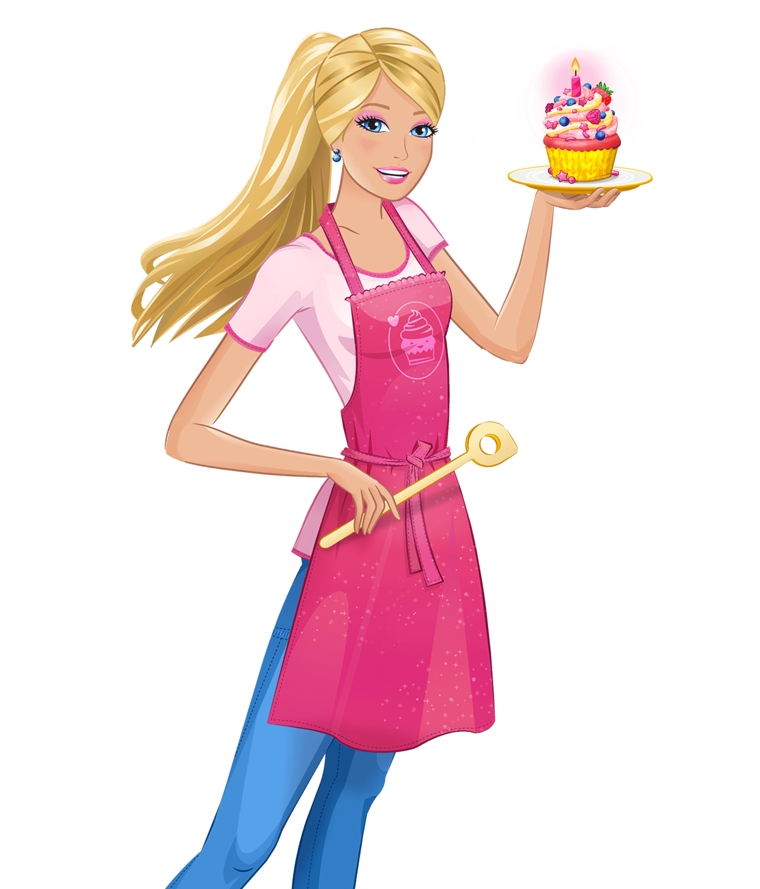

BARBIE

History
Создательницей Барби стала Рут Хэндлер, супруга основателя фирмы Mattel Эллиота Хэндлера. По её словам, идея создания куклы, изображающей взрослую женщину, пришла к ней во время наблюдения за играми дочки и её подруг. В то время большинство кукол представляли собой пупсов-малышек, которых следовало нянчить, как младенцев, но десятилетняя Барбара и её приятельницы предпочитали им игры с бумажными куклами — «взрослыми».
Такие куклы — их вырезали из листа картона, к которому прилагались или мастерились самостоятельно сменные наряды из бумаги, — были в своё время очень популярны из-за компактности и дешевизны; изображали они обычно взрослых женщин — красавиц-«моделей». Как утверждает Рут, она почувствовала, что девочкам не хватает куклы, с помощью которой они могли бы разыгрывать разнообразные ситуации из взрослой жизни и таким образом готовить себя к будущему. В руководстве Mattel к затее Рут отнеслись скептически, но в конце концов новая кукла была запущена в производство.
Предшественницей Барби стала Бильд Лилли, героиня комиксов для взрослых из немецкой газеты Die Bild-Zeitung. Блондинка Лилли выглядела как типичная пинап-герл, а юмористические ситуации в комиксах строились в основном вокруг её отношений с многочисленными ухажёрами, вниманием которых она не стеснялась пользоваться. В 1955 году была выпущена пластмассовая кукла Лилли — её Рут и выбрала в качестве образца. Вместе с инженером Джеком Райаном она переработала дизайн куклы и дала ей имя «Барби» в честь дочери Барбары. Первая Барби была представлена на Американской международной ярмарке игрушек (англ.)русск. в 1959 году: выпущена она была в двух вариантах — брюнетка и блондинка, обе модели продавались в чёрно-белых купальных костюмах (наряды для куклы следовало приобретать отдельно) по $3. Поначалу родители отнеслись к новинке с недоверием, но уже скоро Барби стала одной из самых популярных в Америке игрушек. Права на куклу Бильд Лилли Mattel выкупил в 1964 году, с тех пор куклы Лилли не производились.
1967 год, из-за популярности танца " твист" разработчики придумали куклу на шарнирах, теперь кукла могла поворачивать руки и ноги. А из-за многочисленных жалоб родителей из-за "взрослости" куклы, макияж и изменили на более детский . Такая Барби существовала только 3 года, после, ее сняли с производства , детям не понравилась новая Барби, объясняя это тем, что более взрослый образ нравится им больше. Но идея с шарнирами получила продолжение в других образах куклы.
Contact
>Блашонкова Анна
Ученица ИС 19-01
контрольное задание